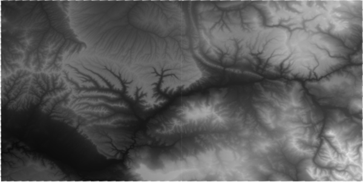
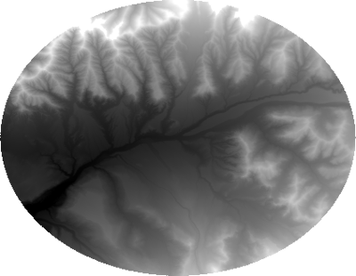
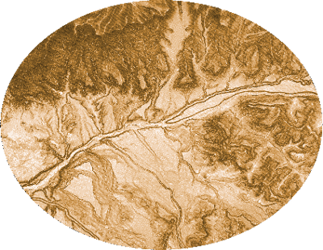

Blog
A Case Study
2020-02-24
This week, we take a look at how far we’ve gotten towards modeling our landslide susceptibility. Here’s what’s been done so far.
Decide on a town or city.
- For this case study, I chose Collbran, Colorado because it was listed as having the largest landslide in Colorado (cite Wikipedia article).
Decide on a CRS
- I have chosen NAD83 UTM 13N because the datum matches the DEM data I found (see next point) and is also recommended by CDOT (missing link)
Download digital elevation data (e.g., The National Map)
- I had to download two tiles n40w108 and n40w109 because my town is located near the tile intersection

Project raster(s)
Add city to the map by creating a plain text file (e.g., point.txt), creating an XY Point table (such as the one below), and importing to GIS
ID,LAT,LON,CITY,STATE 0,39.240016,-107.963956,Collbran,CO
Project point
Extract DEM by mask (e.g., buffer or poly)
- Chose to create a 10 km buffer around my town because the town limits was pretty small and a 10 km buffer area is less than 100,000 acres—the maximum area for downloading a web soil survey spatial map
- Note: I had to use Cell Statistics to knit together two DEM tiles after mask extraction; I chose to knit after extraction because the files are smaller and processing time would be faster.

Calculate slope
- Raster dataset (geotiff)

Download soil data (e.g., Soil Web Survey)
- To get my Area of Interest (AOI), I exported the buffer to a shape file and used the shapefile to set my AOI
- Soil Web Survey AOI shapefile and tabular data (zip)

Figure out what the soil survey is actually saying
- Data is from the Digital General Soil Map of the United States (STATSGO2) database (see Tables and Columns report found here) and uses a map unit key (MUKEY) and map unit symbol (MUSYM) to relate the shapefile’s attribute table to soil information (presumably in the tabular files)
- Files of interest:
- comp.txt (link between mapunit key and component key)
- chorizon.txt (link between component key and horizon key)
- chunifie.txt (link between horizon key and horizon unified classification)
- muagatt.txt (link between map unit symbol and minimum bedrock depth, cm)
- I need to build a table that matches map unit key –> component key –> horizon key –> unified classification –> angle of friction/cohesion
- First attempt at adding ASCII table to ArcGIS Pro failed (everything dumped into a single field; so, it doesn’t seem to recognize the pipe character “|” as a delimiter)
Current Challenges
- Create a table/link between map units (in the attribute table) to unified soil classification (in chunifie.txt)
- Create a table of unified soil classification and soil cohesion and angle of friction (which values to choose and why)
- Create a table/link between map symbols and minimum bedrock depth (cm) found in muagatt.txt
Growing Pains
2020-02-20
Sometimes you realize that starting simple isn’t actually a bad thing and ambition gets the better of you.
In the first crack at the advanced GIS class, I went all in on tackling problems I don’t have answers to. My thinking was, if I don’t know the answer, then students may feel more at ease at trying new methods and experimenting with various approaches. The reality is, none of us know what to do and little to nothing gets done.
The first set back was definitely the website (my fault). Naively, I guessed that Jekyll’s “simple blogging site” would be just a matter of a few mouse clicks, edit these few fields, and away you go. The spread out documentation and lack of good tutorials played the first minor key and set the tune of this composition. The upside is, I now have a working template that I can share with students so they don’t have the same struggle I did. (REMINDER: share your Jekyll site template).
Not having class the first week of the semester has also created a challenge as we have an unbalanced before-and-after spring break schedule. I’ve opted for a longer second half of the semester project, since exams and projects in other classes tend to slow down a class’s pace.
In hindsight, next iteration should play more to my own strengths (i.e., water); though, I would not have been able to come up with several ideas integral to the class if I hadn’t stumbled at this first attempt.
That’s growing pains for you.
Hacking Python
2020-02-17
In an effort to run a simple python script in the CGA classroom, I opted to create an example python script that showcases a basic class structure that can be easily manipulated. The hope was to use this as a launching point towards writing a python-based toolbox for the first part of this class.
Of course, Python 3 does not run from the command line on the classroom’s machines, even though a version of Python 3 is installed.
A first ditch effort was to add to the user’s environment variables the path to the Python 3 executable, which completely and utterly failed. Caveat, a student adeptly pointed out that by changing the executable’s name from Python.exe to Python3.exe, you can totally call it from the command line. Rather, I went through the arduous process of hacking into ArcGIS Pro’s python environment, which is a three-step process:
- Clone the original Python 3 environment used by ArcGIS Pro
- Append the path to the ArcGIS/Pro/bin/Python/Scripts folder to the user environments
- Activate the cloned python environment from the command line
This seems completely ridiculous at first glance; however, in my opinion, programming works best when the testing environment is separate from the working environment.
Jekyll Updates
I attempted to leave Jekyll behind for an alternative blogging site (R blogdown), but after a few hours, it became obvious that this was even more complicated than Jekyll.
So, I have finally decided to read through some of the Jekyll documentation and in doing so, I have created my blog site. This required creating a _posts directory that contains very specifically named markdown files and creating a blog.md (with a proper YAML header) that uses Liquid tags to read each markdown file in my _posts directory and prints them in reverse chronological order.
Finally.
The other success story was removing the overflow=hidden property from my navigation menu; now I can see all my buttons in a tiny window! I also added a responsive element to the CSS to make the navigation bar twice the height when the screen size is small.
I feel that I have reached some small level of nirvana. It has only taken several weeks and many lost hours of development to get here.
Update
After getting a Jekyll blogging website to work, I decided that that mountain has been climbed and I’ve torn it down and rebuilt it using R Markdown Website, which I use for my Spatial Data Discovery class.
The example Jekyll site template that I got working is available here (zip) for those brave enough to venture forth.
- add blog posts to _post directory
- add any files (.txt, .zip, .png) to assets folder to link from anywhere on the website
- use the “navigation_weight” in the YAML header to order your navigation bar entries
So long Jekyll, it’s been… emotional.
Toolbox Revelation
2020-02-10
This week in advanced GIS, I wrapped up my first draft of a working ArcGIS Toolbox for the CGA’s Middle Earth class. The class tutorial relied on a toolbox that was created several years ago using arcgisscripting, which had suddenly and unexpectedly stopped working. I took upon the challenge of upgrading arcgisscripting to arcpy for ArcGIS Pro as I debugged the code.
The first setback was testing the code, because the workflow for a toolbox is not clearly defined anywhere. Therefore, I started just as I would any project with a basic script separated into functions, classes, and the if __name__ is "__main__" block at the bottom.
While I found a method for hacking into ArcGIS Pro’s python environment, on my laptop, I am already hacking into OSGEO4W’s (QGIS) python, so I’m a little frustrated with switching back-and-forth between the two for the ease of command-line use (I tried virtual environments, but it doesn’t like the PYTHON_PATH environment variable linking to OSGEO4W).
Having tested a good portion of the python script via importing the class on ArcGIS Pro’s python command line and running through the methods with the typical debugging, I approached the “all-in” moment to go to the toolbox PYT script (you literally just change the file extension from .py to .pyt), but now as a toolbox, you gain access to drop-down menus and the progress bar (secret messages!). As I loaded the PYT into Python as a new toolbox, I was having to wait 5–10 minutes before the toolbox became available and I kept getting this RUNTIME ERROR message before I finally realized that that stinking if __name__ is "__main__" is actually running when the toolbox is loaded! So I removed it and now the toolbox loads super quick. There is still the lingering problem where I create dependencies on folder location in the tool class’s init, which also, interestingly, is called when the toolbox is imported and has created errors when sharing a toolbox in a folder that moves from one computer to another as the absolute paths change.
This, to be addressed at another time.
Update: the SPI toolbox has been forked from WildlifeConservationSocietyCI’s SPI repository and is available at the CGA-WM GitHub organization.
Jekyll Updates
The navigation bar still haunts me. I was able to get a CSS style that makes the navigation bar stay at the top of the screen, but I can’t seem to make it responsive to screen width. Sorry to those of you looking at this website on mobile devices. I also found a way to create an ordered navigation using a sort by navigation_weight variable that I added to each page’s YAML header.
This can be considered a positive development.
The Jekyll
2020-02-03
Jekyll, thou art a villainous foe.
In all good intentions, I had planned that we utilize the “simple blogging site” that is Jekyll and GitHub Pages for communicating the learning objectives of this class. Little did I know, that Jekyll sites are truly miserable to get a handle on. Despite all the resources I have found, there are no good “starting a blog site” instructions for this pairing. The Jekyll help pages are simply that, help pages—no tutorials or templates.
My goals:
- only use markdown rather than HTML (failed)
- you have to create at least one HTML file (i.e., the default.html in _layouts directory)
- have Jekyll static site generator handle all the style (failed)
- Jekyll themes seem to require a style.scss in assets/css, which you don’t realize you need until you go to the theme’s GitHub page
- in my opinion, a modern-day website should include a navigation bar, which Jekyll seems to omit with its themes (I chose the theme slate).
- simply upload blog posts that are automatically rendered to my website (failed)
- to get blog posts on to your website, you have to design a web page and somehow link to your post content, which is not entirely clear
Overall, I am washed with a feeling of dissatisfaction.